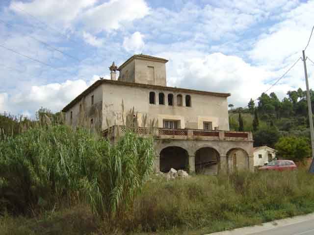
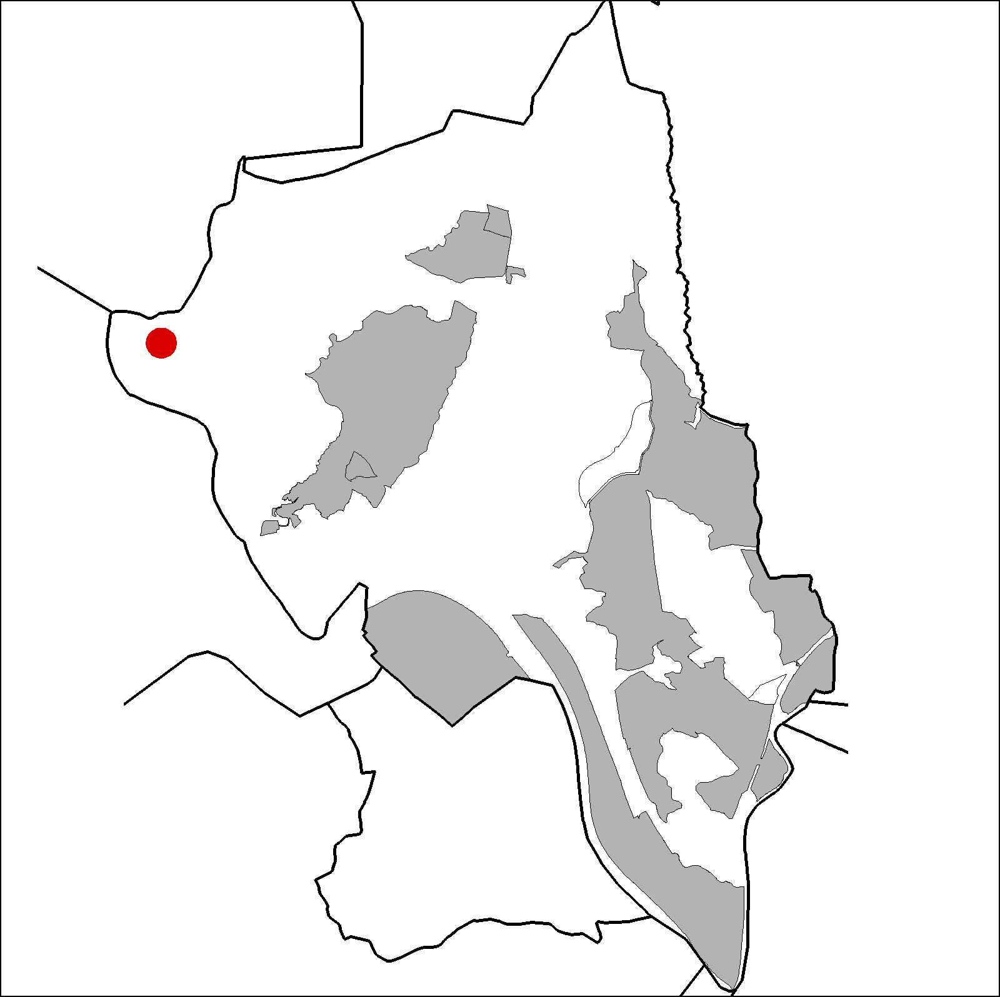

|  |  |
Nom de l’element: Can Flavià de les Illes
Clau d’identificació: B.1.09
Nucli o indret: Carretera d’Olesa BV-1201, riera del Morral.
UTM: X=410.572, Y=4.594.207, 70 m snm.
Referència cadastral: Poligon 15, parcel·la 9503 (000600100DF19C)
Règim del sòl: Urbanitzable no delimitat
1.1. Època de construcció i tipologia:
Masia datada del 1736, de secció quadrada amb una coberta a quatre aigües, de fusta i teula, amb una lluerna al centre, de planta baixa i dues plantes pis. Els murs són de mamposteria i conglomerat. Té unes façanes amb obertures simètriques i arcs en forma d’atri que culminen l’última planta. Té un porxo amb una arcada a la coberta oest. Presenta un conjunt de magatzems addicionats i un habitatge del masover. Antigament havia acollit una comunitat de sacerdots.
1.2. Estat de conservació:
En general, dolent. Els forjats, les voltes, les façanes i les obertures presenten un estat mitjà de conservació. Les estructures portants, la coberta, el paviment i els acabats interiors tenen un estat dolent. Presenta humitats.
1.3. Ús actual:
Sense ús.
1.4. Accés:
Accés fàcil des de la carretera d’Olesa BV-1201.
Masia del 1736, de secció quadrada i coberta a quatre aigües.
3.1. Usos admesos:
Habitatge rural (màxim 3 habitatges); residencial; hoteler (excepte aparthotel; i amb un màxim de 30 places); oficines i serveis; industria vinculada a productes del camp (industrial, categoria 1ª); educatiu; recreatiu cultural i social; recreatiu de restauració; esportiu.
3.2. Condicions d’ordenació:
Segons Pla Parcial a redactar.
3.3. Accés i serveis:
Carretera d’Olesa BV-1201.
BCIL (Bé Cultural d’Interes Local)